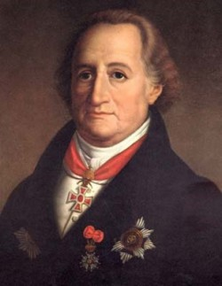

Mi Libro Favorito Y Recomendaciones
En esta pagina te voy a mostrar mi libro favorito y te mostrare una parte, este libro lo lei hace algunos años y me gusto demasiado.
a continuacion te voy a mostrar la portada del libro y algunos datos.
Las penas del joven Werther (1774), que su autor escribió cuando sólo tenía veinticinco años, en plena época de la corriente del Sturm und Drang (de la que luego se apartaría para iniciar el movimiento clásico de Weimar, junto a Schiller), fue el primer gran éxito de Goethe, que pasó a ser toda una celebridad de la noche a la mañana.
La obra tuvo una gran influencia en el Romanticismo alemán y en su día desató una fiebre por toda Europa
Johann Wolfgang von Goethe (Frankfurt, 1749-Weimar, 1832) es uno de los escritores más importantes de la literatura alemana de todos los tiempos.
